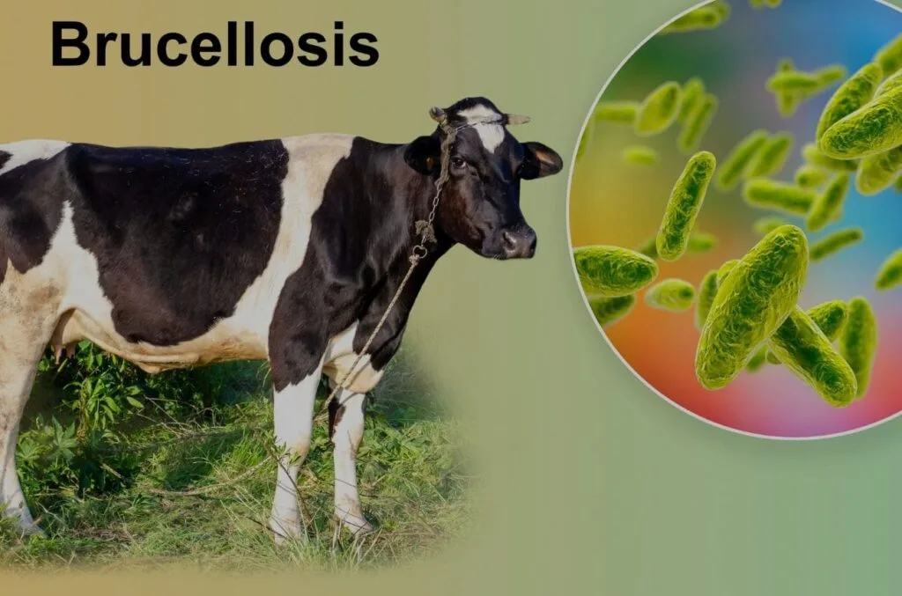

Expanded Nursing Uganda Explanation
Brucellosis should be reviewed through safe maternal and newborn assessment, early recognition of danger signs, respectful communication and timely referral. Connect the definition to vital signs, bleeding, fetal or newborn wellbeing, patient education and local protocol requirements.
Contents, 13 sections (tap to expand)
01 Brucellosis (Undulant Fever, Malta Fever, Abortus Fever)
Brucellosis is a zoonotic bacterial infection of acute onset, commonly known as undulant fever, Malta fever, or abortus fever.
It’s primarily an occupational disease among people working with infected livestock or associated fresh animal products. This includes butchers , farmers , abattoir workers , and vendors of contaminated roasted meat ( muchomo ).
Incubation Period:
The incubation period for brucellosis is typically 2-4 weeks, but can range from 1 to 8 weeks.
02 Forms of Transmission:
- Direct Contact : Contact with infected animals, particularly during handling, slaughtering, or birthing, can lead to transmission.
- Ingestion : Consuming unpasteurized milk, cheese, or other dairy products from infected animals is a common route of transmission.
- Inhalation : Inhaling contaminated aerosols, particularly in settings where animal products are processed or handled, can lead to infection.
- Accidental Exposure: Laboratory workers or those handling animal products in agricultural settings may be at risk of accidental exposure.
03 Routes of Transmission:
- Occupational Exposure : Farmers, veterinarians, slaughterhouse workers, and laboratory workers are at increased risk of exposure due to their close contact with infected animals.
- Consumption of Contaminated Products : Consuming unpasteurized milk, cheese, or other dairy products from infected animals is a common route of transmission.
- Accidental Exposure : Accidental exposure to contaminated materials or aerosols, particularly in laboratory settings, can lead to infection.
Causes/Aetiology:
Brucella Species : The most common species of Brucella that infect humans are:
- Brucella abortus (cattle)
- Brucella melitensis (goats and sheep)
- Brucella suis (pigs)
- Brucella canis (dogs)
04 Clinical Features:
Brucellosis is known for its diverse range of symptoms, which can appear anywhere from a few days to several weeks after infection. Common features include:
- Fever : High-grade fever, often accompanied by chills and sweats.
- Fatigue and Weakness : Profound fatigue, lethargy, and muscle aches.
- Headache and Stiff Neck: Persistent headache, often accompanied by neck stiffness.
- Arthritis and Muscle Pain: Pain and inflammation in joints, particularly in the spine and large joints.
- Sweating : Excessive sweating, particularly at night.
- Weight Loss : Unintentional weight loss due to poor appetite and decreased food intake.
- Depression : Emotional disturbances, including depression, anxiety, and irritability.
- Splenomegaly and Hepatomegaly: Enlargement of the spleen and liver.
- Orchitis : Inflammation of the testicles in men.
- Endocarditis : Infection of the heart valves.
- Meningitis : Inflammation of the meninges (membranes surrounding the brain and spinal cord).
05 Differential Diagnosis:
- Typhoid fever: Similar symptoms, including high fever, headache, and muscle aches.
- Malaria: Fever episodes that coincide with mosquito bites.
- Tuberculosis: Chronic cough, night sweats, and weight loss.
- Trypanosomiasis (sleeping sickness): Fever, headache, and fatigue, often accompanied by neurological symptoms.
- Other causes of prolonged fever: Other infections, autoimmune disorders, and certain cancers can also cause prolonged fever.
06 Definitive Diagnosis and Investigations:
- Blood Culture : A positive blood culture for Brucella is considered the definitive diagnosis.
- Serological Tests : Serological tests, such as the agglutination test and the enzyme-linked immunosorbent assay (ELISA), can detect antibodies against Brucella bacteria.
- Other Tests: Additional tests, such as bone marrow culture, urine culture, or biopsy, may be necessary depending on the clinical presentation.
- Blood : Complement fixation test or agglutination test (where possible).
- Isolation of the infectious agent from blood, bone marrow, or other tissues by culture.
07 Management :
Treatment :
Adults and children > 8 years:
- Doxycycline 100 mg every 12 hours for 6 weeks
- Plus gentamicin 5-7 mg/kg IV daily for 2 weeks
- Or ciprofloxacin 500 mg twice daily for 2 weeks
Children < 8 years:
- Cotrimoxazole 24 mg/kg every 12 hours for 6 weeks
- Plus gentamicin 5-7 mg/kg IV in single or divided doses for 2 weeks
Caution :
- Treatment duration must be adhered to at all times.
- Ciprofloxacin is contraindicated in children <12 years.
- Doxycycline and gentamicin are contraindicated in pregnancy.
08 Prevention:
- Public health education :
- Drinking only pasteurized or boiled milk.
- Careful handling of pigs, goats, dogs, and cattle, especially if a person has wounds or cuts.
- Veterinary service s: Provide veterinary services for domestic animals to prevent the spread of infection.
- Safe handling practices : Use proper hygiene practices when handling animals and wear protective clothing.
- Occupational safety : Implement safety protocols and use PPE in occupational settings where exposure to infected animals or their products is likely.
- Food safety : Consume only pasteurized milk, cheese, and other dairy products. Avoid eating raw or undercooked meat from animals suspected of being infected with Brucella .
- Travel precautions: Advise travelers to countries where brucellosis is endemic to be aware of the risks and take necessary precautions.
09 Complications:
- Endocarditis : Infection of the heart valves, which can be life-threatening.
- Meningitis : Inflammation of the meninges, which can lead to neurological complications.
- Arthritis : Inflammation of joints, particularly in the spine and large joints.
- Osteomyelitis : Infection of the bone, which can lead to bone damage and disability.
- Hepatitis : Inflammation of the liver.
- Orchitis : Inflammation of the testicles in men.
- Chronic Fatigue Syndrome : Persistent fatigue and other symptoms, which can significantly impact quality of life.
- Neurological complications : Neurological complications can occur in severe cases and may include encephalitis, seizures, and coma.
10 Nursing Uganda Clinical Lens
Use Brucellosis as a practical nursing topic, not only a memorized definition. Study medicines through indication, safety checks, expected response, adverse effects and patient teaching.
- What to understand first: define brucellosis, identify the normal or expected pattern, then explain what changes when the patient is unwell.
- Why it matters in care: the nurse must recognize risk early, explain findings clearly, document accurately and know when to escalate.
- How to revise it: connect each point to assessment, nursing diagnosis or care problem, intervention, rationale and evaluation.
11 Assessment Guide
- Diagnosis or reason for the medicine, allergies, pregnancy status and previous reactions.
- Current medicines, herbal products, renal or liver risk and baseline observations.
- Dose, route, timing, dilution, expiry date and documentation requirements.
12 Nursing Priorities, Rationales and Outcomes
- Apply the rights of medication administration and facility policy.
- Monitor therapeutic response and class-specific adverse effects.
- Educate the patient on purpose, timing, missed doses, warning symptoms and adherence.
The rationale for these priorities is patient safety: nursing actions should prevent deterioration, reduce discomfort, support recovery and create clear evidence for the next caregiver.
- Expected outcome: The medicine produces the intended effect without preventable harm, and administration is accurately documented.
13 Patient Teaching and Revision Check
- Explain brucellosis in simple language the patient or caregiver can repeat back.
- Teach warning signs, medicine or follow-up instructions, hygiene or lifestyle points where relevant.
- For exams, prepare a short answer using: definition, causes or risk factors, signs, assessment, management, complications and prevention.
- For ward practice, document baseline findings, actions taken, patient response and the plan for review.
Illustrations and Diagrams (1)

Related Video Lectures
Watch nursing lecture videos on YouTube for this topic. Opens in a new tab.
Watch on YouTubeExternal link: YouTube may use its own cookies and terms. Nursing Uganda is not affiliated with YouTube.